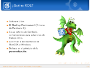
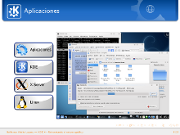
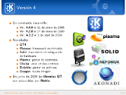

Colección de ideas.
2009-04-21 12:00 - guivaloz
  
Con motivo del Festival Latinoamericano de Instalación de Software Libre, FLISOL 2009 he elaborado esta presentación sobre el origen y la nueva versión del KDE llamándola KDE 4 - Reinventando el entorno gráfico.
Fuertes e innovadores cambios nos ofrece la versión 4 de este entorno de escritorio e infraestructura de desarrollo para sistemas Unix/Linux. Aunado a ello una gran comunidad de desarrolladores, traductores, diseñadores y promotores han incrementado sus esfuerzos para lograr crear lo mejor de lo mejor para el Software Libre.
Esta presentación está basada en los materiales de Thomas Thym y de Arturo Hoffstadt.
Una de las frases de la nueva campaña de KDE simboliza lo que les digo: “Sé libre de pedir un deseo, y entonces ayuda a que se vuelva realidad”.